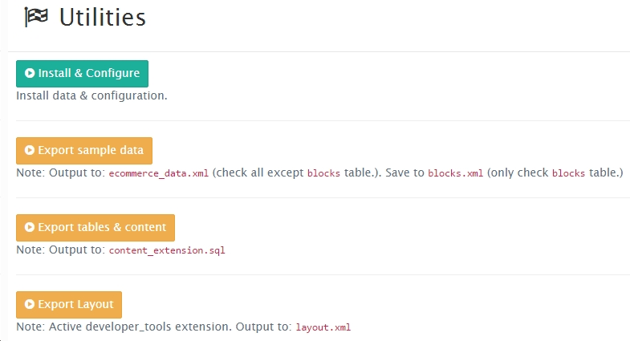
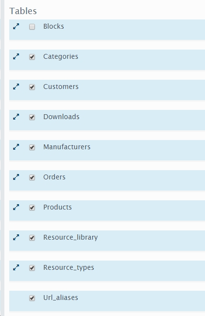

Backup data¶
For theme developer¶
After we have built a complete theme, now it’s time to backup the data of your theme.
Folder structure¶
- data/ - website data.
- blocks.xml
- layout.xml
- ecommerce_data.xml
- content_extension.sql
- files/ - contain files resources (ie: image,..)
- download/
- image/
- resources/
Included other files in your theme directory.
Doing follow these steps: Go System > Settings > My Settings.
As above figure, click on the link Export sample data to export ecommerce_data.xml and blocks.xml. Note: with the file ecommerce_data.xml select all items exclude Blocks.
In contrast to blocks.xml only select Blocks checkbox. Field ‘File Format’ set to XML. The field ‘File Name’ fill ‘blocks’ and hit Export
You can also use two buttons Export to download files.

To Export content_extension.sql click on Export tables & content.
Note: this is not important to update time in sql file, you need to replace real date to sql date function: To do this, open
the file .sql in notepad++ editor, press Ctr+F and check on ‘Regular expression’ in search dialog.
First time:
- Find what:
'2016.+', - Replace with:
now\(\),
Second time:
- Find what:
'2016.+'\) - Replace with:
now\(\)\)
To export layout.xml, press Export Layout.